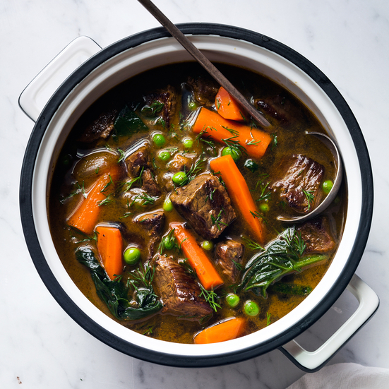

In a large saucepan, heat the olive oil until shimmering. Season the meat with salt and pepper and add it to the saucepan in a single layer. Cook over moderately high heat, turning occasionally, until browned all over, about 10 minutes. Add the stock and shallots and bring to a boil. Simmer over low heat until the meat is tender, about 1 1/2 hours.
Add the carrots to the saucepan and simmer until tender, about 12 minutes. Add the peas, spinach and dill and cook until the spinach is wilted, about 2 minutes. Ladle the stew into bowls and serve with crusty bread.
INGREDIENTS:2 tablespoons extra-virgin olive oil 2 pounds beef chuck, cut into 1 1/2-inch pieces Salt Pepper 1 quart chicken stock or low-sodium broth 6 shallots, halved 1/2 pound carrots, cut into 2-inch lengths 1 1/2 cups frozen peas 5 ounces curly spinach 2 tablespoons chopped dill Crusty bread, for serving
